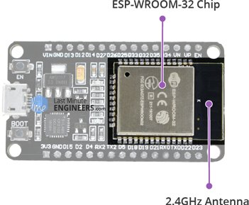
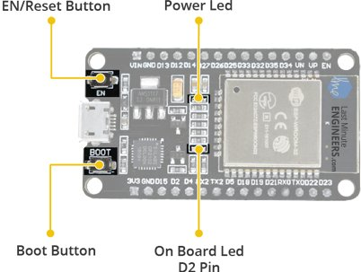
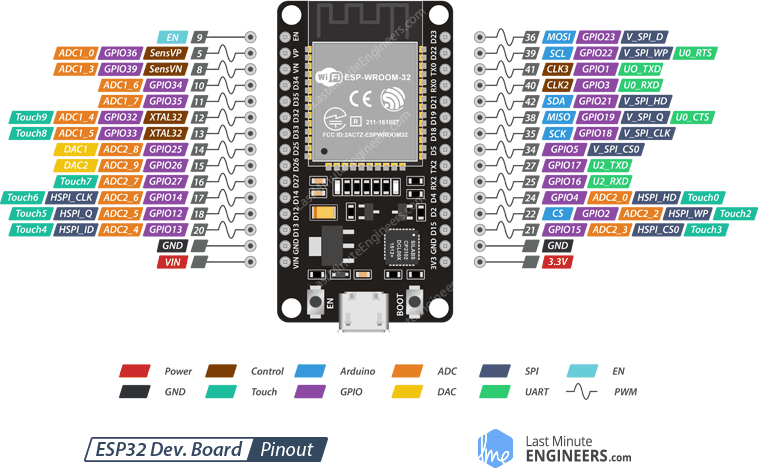
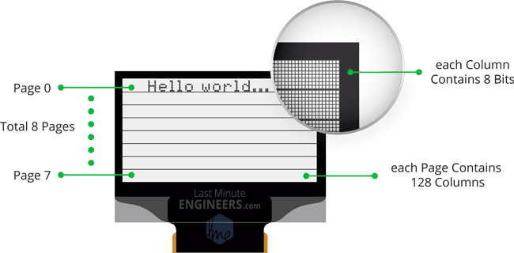
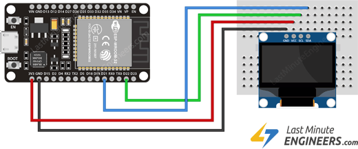

Óbudai Egyetem
________________________________
Bánki Donát Gépész és Biztonságtechnikai Mérnöki Kar
Szabaduló szoba vezérlő szoftver tervezése
OE-BGK Hallgató neve: Kovács Árpád
2021. Hallgató törzskönyvi száma: /KVI
ÓBUDAI EGYETEM
Bánki Donát Gépész és Biztonságtechnikai Mérnöki Kar
HALLGATÓI NYILATKOZAT
Alulírott hallgató kijelentem, hogy a szakdolgozat saját munkám eredménye, a felhasznált szakirodalmat és eszközöket azonosíthatóan közöltem. Az elkészült szakdolgozatban található eredményeket az egyetem és a feladatot kiíró intézmény saját céljára térítés nélkül felhasználhatja, a titkosításra vonatkozó esetleges megkötések mellett.
Budapest, 2020.
..................................................
hallgató aláírása
Tartalomjegyzék
2. Szakirodalom elemző feldolgozása 5
2.1.1 Hivatkozások sorrendje 6
3.1 Rajzok, képek, diagramok, ábrák 7
5. Idegen nyelvű tartalmi összefoglaló 13
6. Felhasznált irodalom vagy Irodalomjegyzék 14
A Tartalomjegyzékben a fő- és alfejezetek kerülnek megjelenítésre decimális számozással, az oldalszám feltűntetésével. Összeállításakor ügyelni kell arra, hogy a fejezetek címe és oldalszáma pontosan megegyezzen a dolgozatban szereplő címmel és oldalszámmal. A Tartalomjegyzék szerkesztésekor alkalmazható a „Tartalomjegyzék beszúrása”, amivel a fejezetek és oldalszámok változása aktualizálható („Mezőfrissítés”). Ehhez szükséges a fő- és alfejezetek (Címsor 1, Címsor 2, Címsor 3) stílusának beállítása minta szerint.
Az anyag legelső része a bevezetés, mely minimum egy oldal legyen, terjedelemben az egész Szakdolgozat maximum 10%-a lehet. Tartalmazza a téma jelentőségét, aktualitását, a szakdolgozat célkitűzéseit, a problémafelvetést valamint a megoldandó probléma megfogalmazását.
Ezen kívül kitérhet a cég, vállalkozás, munkahely rövid bemutatására.
A szöveg szerkesztése legyen A4-es méretű oldalon: fent 4 cm, lent 2,5 cm, bal és jobb 2,5 cm, 1 cm kötésmargóval, Times New Roman betűtípussal, 12 pontméretű betűvel, 1,5-es sortávolsággal. A szöveg igazítása sorkizárt. Célszerű a szöveg szerkesztése során minden lap alján az ’oldaltörés’ beszúrása, mert így kezelhetővé válik a szöveg és nyomtatásnál sem csúsznak el az oldalak.
A főfejezetek formázása (Címsor 1): Times New Roman 14 félkövér betűtípus, középre zárt bekezdéssel, előtte és utána 6 pt térközzel. Minden főfejezetet külön oldalon kell kezdeni. Az alfejezetekhez (Címsor 2, Címsor 3) alkalmazott betűméret 12 félkövér. A dolgozat fejezetei és alfejezetei decimális számrendszerrel jelöltek legyenek, legfeljebb három szám mélységig számozódhatnak, előtte és utána 1-1 sor kihagyással. Egy alfejezet minimális hossza 1 oldal legyen.
Oldalszám elhelyezése: felül, lapközépen, lapszéltől 20 mm-re, melyet az első oldalon (Tartalomjegyzéknél) nem kell feltüntetni.
Ebben a részben a témával kapcsolatos szakirodalom feldolgozása kerül, melynek célja a feladat, téma elméleti hátterének részletes bemutatása. Ez terjedelemben az egész szakdolgozat legfeljebb 25-30%-át adhatja ki. A hallgatónak a témával kapcsolatos lehető legtöbb irodalmat (de legalább 5-8 db.) fel kell használnia: könyv, jegyzet, szakcikk, internetes portál, stb. A publikáció hivatkozását az előírásoknak megfelelően kell jelölni és megnevezni.
A szöveg szerkesztése legyen A4-es méretű oldalon: fent 4 cm, lent 2,5 cm, bal és jobb 2,5 mm, 1 cm kötésmargóval, Times New Roman betűtípussal, 12 pontméretű betűvel, 1,5-es sortávolsággal. A szöveg igazítása sorkizárt. Ez a rész akár több fejezetből és alfejezetből is állhat, de a 3-as szintű címsorszámozást lehetőleg kerülni kell. Egy alfejezet minimális hossza 1 oldal legyen.
A fejezetek címeit a kiírt témának megfelelően (konzulensekkel egyeztetve) kell megválasztani a 2. és a 3. fejezetben, nem úgy, ahogy ebben a mintában szerepelnek!



A szakdolgozat a hallgatók önálló munkájaként készül, forrásmunkák, a tárgyhoz kapcsolódó szakirodalom természetesen felhasználható. A dolgozatból mindenképpen ki kell tűnnie, hogy melyek azok a részek, amelyek forrásmunkák felhasználásán alapultak. Ezért minden olyan esetben utalni kell a forrásmunkára, amikor a dolgozatban szereplő megállapítások, adatok nem a hallgatók önálló megállapításai, felmérései, adatgyűjtései


alapján keletkeztek. Szó szerint átvett anyagrészeket idézőjelben, a forrás megjelölésével kell szerepeltetni. A szakirodalomra való hivatkozás úgy történik, hogy a dolgozat végén a felhasznált forrásmunkákat sorszámozva közlik, és a szövegben csak a vonatkozó irodalom sorszámot jelzik, szögletes zárójelben. Pl. A kérdés megközelítése [1] szerint .... A fejezetcímhez szakirodalmi hivatkozást tenni nem szabad.
A Felhasznált irodalomban szereplő publikációkat nem betűrendi sorrendbe, nem a megjelenés dátumának sorrendjében kell felsorolni, hanem a szövegben történő hivatkozás sorrendje szerint. Tehát a szövegben az első hivatkozás száma [1] és a dolgozat további részeiben egymás után, ahogy következnek. Természetesen, ha a későbbiekben ismét hivatkozni kell egy már számozott publikációra, megtehető.
A dolgozat további fejezeteiben kell összeállítani a Szakdolgozat kiírásban felsorolt feladatokat, a Bevezetésben meghatározott célkitűzésekkel összhangban. Terjedelemben az egész Szakdolgozat legalább 50%-a legyen. A témától függően több fejezetre is bontható a saját munka bemutatása, azonban sem a fejezetek, sem az alfejezetek számát nem célszerű túlzottan megnövelni. A fejezetek címeit a kiírt témának megfelelően kell megválasztani!
A szöveg szerkesztése legyen A4-es méretű oldalon: fent 4 cm, lent 2,5 cm, bal és jobb 2,5 mm, 1 cm kötésmargóval, Times New Roman betűtípussal, 12 pontméretű betűvel, 1,5-es sortávolsággal. A szöveg igazítása sorkizárt.
A rajzokat, táblázatokat és egyéb illusztrációkat a szöveg közben ott, ahol szóba kerülnek, vagy mellékletként kell elhelyezni. A megjelenítés a következőképpen történik.
[CHART]
1. ábra. Az ábra elhelyezés mintája [6]
Az ábrát (legyen az diagram, kép vagy rajz) középre szerkesztve, ábraszámmal és megnevezéssel kell ellátni, amely a beállított margón nem nyúlhat túl. Az ábra számára a szövegben hivatkozni kell (1. ábra). Ha az ábra egy megjelent publikációból származik, tehát nem saját készítésű, akkor a megfelelő szakirodalomra hivatkozni kell a minta szerint.
A táblázatok szerkesztésénél az alábbi szempontokat kell figyelembe venni. A táblázat középre szerkesztve, számmal és megnevezéssel ellátva. Számozás és megnevezés a minta szerint történjen, jobb oldalra igazítva, dőlt betűtípussal.
1. táblázat: A táblázat elhelyezés mintája [7]
| Szöveg legyen olvasható | Szöveg legyen olvasható | |||
|---|---|---|---|---|
A táblázat számára a szövegben hivatkozni kell (1. táblázat). Ha egy megjelent publikációból származik, akkor a megfelelő szakirodalomra hivatkozni kell a minta szerint. A táblázat szerkesztésénél ügyelni kell arra, hogy a tartalma olvasható és átlátható legyen. Szkennelt ábrát és táblázatot nem tartalmazhat a dolgozat, a hallgatónak kell megszerkesztenie táblázatkezelő, rajzkészítő stb. programok segítségével úgy, hogy jól láthatóak legyenek.
A nagyobb terjedelműeket a Mellékletek tartalmazzák melyek, ha egységesen A4 formátumúak, akkor a dolgozattal együtt köthetőek, ha nagyobb méretűek, akkor szabályosan összehajtva a hátsó borítólap belső oldalán kialakított tasakba kell tenni.
Számítások elvégzéséhez vagy egyéb esetekben képletek megjelenítésére kerülhet sor, melyet az alábbiak szerint kell megszerkeszteni. A képlet kerüljön középre, irodalomhivatkozással és sorszámozással. Továbbá az összefüggésben lévő elemeket meg kell nevezni mértékegységükkel feltűntetve a minta szerint.
A képességindex számításánál alkalmazott összefüggés [8]:
(3.1)
ahol: Cx: képességindex (capability);
FTH: felső tűréshatár;
ATH: alsó tűréshatár;
TM: tűrésmező;
: a folyamat elméleti szórásának becslése.
A szerkesztéshez Egyenletszerkesztő alkalmazását javasoljuk.
Az elméleti érdesség értéke a Brammertz-féle formula szerint [13]:
(3.2)
(3.3)
ahol: ReBr: elméleti érdesség [μm],
f: előtolás [mm/ford],
rε: a lapka csúcssugara [mm],
hmin: a leválasztható minimális forgács- vastagság [μm],
vc: forgácsolósebesség [m/min],
rn: éllekerekedés [μm].

A szerkesztéshez Egyenletszerkesztő alkalmazását javasoljuk.
A szövegben az összefüggésre (3.2) történő hivatkozás, hasonlóan az ábrára, táblázatra való hivatkozáshoz történjen. A számozást fejezetenként újra kell kezdeni.
Alias /escape_room "E:/Github/obudai_diplomamunka/server_part" <Directory "E:/Github/obudai_diplomamunka/server_part"> AllowOverride AuthConfig Require local ErrorDocument 403 /error/XAMPP_FORBIDDEN.html.var </Directory> |
A szakdolgozat szövege folyamatos, azonban felsorolás kismértékben, ahol szükséges alkalmazható. A felsorolások szerkesztésénél ügyelni kell a jelölésekre és a mondatjelekre. A felsorolás szerkezetileg egy mondat, tehát van eleje, közepe és vége, melyeket írásjelekkel tudunk meghatározni. Ennek megfelelően a helyesen megszerkesztett felsorolást mutatja az alábbi példa.
A felsorolásnál alkalmazható jelölések szintenként:
gondolatjel;
pontjel;
négyszögjel.
Az egyes felsorolások végén pontosvessző van és a „gondolatok” kisbetűvel kezdődnek. Az utolsó felsorolást ponttal zárjuk. Egy másik példa szerint minden felsorolást külön mondatként kezelünk, ha azok nem egy összefüggő gondolatot tükröznek. Ilyenkor csak az első szinten alkalmazzuk a gondolatjelet.
Néhány kiegészítés a Szakdolgozat szerkesztéséhez:
A szakdolgozat terjedelme 40-70 oldal legyen (mellékletek nélkül értendő).
A szöveg szerkesztésekor ne használjuk idegenszavakat, kivéve ha nincs magyar megfelelője.
A helyesírási hibákra és a gépelési elütésekre fokozottan ügyeljünk, mert a hibás, nem magyaros, csúnyán szerkesztett dolgozattal értékes pontokat lehet veszteni a bírálatnál még akkor is, ha egyébként szakmailag kifogástalan a munka.
Fogalmazzunk egyszerű, de kerek, egész mondatokkal.
Ne tagoljuk a szöveget üres sorokkal vagy úgy, hogy minden mondat külön bekezdésben szerepel. Ez nem célszerű!
Az ábrákat, táblázatokat illusztrációként használjuk, melyek tartalmát a dolgozatban le kell írni.
Természetesen számokkal vagy betűkkel is jelölhetjük a felsorolást az alábbiak szerint.
A szakdolgozat összeállításának szabályai bekötésnél:
Az első oldal a SZAKDOLGOZAT címlap.
A második oldal a Szakdolgozat kiírási lap, amely az Intézetigazgató által valamint a konzulens(ek) által aláírt.
A harmadik oldalra kerül a Hallgatói nyilatkozat.
Ezt követi a Tartalomjegyzék és a dolgozat többi fejezete a szerkesztés szerint.
A dolgozat utolsó része a rövid tartalmi összefoglaló, mely minimum egy oldal legyen, terjedelemben az egész Szakdolgozat maximum 5%-a lehet (1500-2500 karakter). Tartalmazza a kitűzött célok, felvetett problémák megoldását továbbá a következtetéseket. Térjen ki a gyakorlati alkalmazhatóságra.
Escape room management software which is based on ESP32, contains admin user interface, and multiple features for easier setup, reset, and for measuring time.
A magyar nyelvű összefoglalás idegen nyelven történő közlését tartalmazza. Az idegen nyelvű tartalmi összefoglaló elkészítése történhet: angolul, németül, oroszul vagy franciául.
Példák az egyes publikációk megnevezésére.
Könyv esetében: Szerző (vagy Szerkesztő): Cím. Kiadó. Hely, Évszám. Oldalszám.
[1] M. Csizmadia Béla: Modell-alkotás. Nemzeti Tankönyvkiadó. Budapest, 2003. p. 21-24.
Szakcikk esetében: Szerző(k): Cím. Folyóirat megnevezése. Megjelenés száma/dátuma. Oldalszám.
[2] Hervay Péter – Csesznok Sándor: Marási környezet szimulációjának alkalmazása az oktatásban. Gépgyártás XLVII. évfolyam, 2007. 2-3. szám p. 15-17.
Jegyzet esetében: Szerző (vagy Szerkesztő): Cím. Oktatási Intézmény. Hely, Évszám. Oldalszám.
[3] Ambrusné dr. Alady Márta – Galla Jánosné – dr. Sipos Sándor: A Gépgyártástechnológia alapjai. BMF jegyzet. Budapest, 1995. p. 50-55.
CD-n megjelent publikáció esetében: Szerző (vagy Szerkesztő): Cím. Publikáció (Konferencia) neve. Hely, Évszám. CD. ISBN szám.
[4] Miko, B.: Hybrid inteligence system for mold cost estination. VI. International tools conference (ITC) 2007. Zlin, May 22-23, 2007. CD. ISBN-978-80-7318-572-5
Internetes publikáció esetében: Szerző (vagy Szerkesztő): Cím. Hely. Évszám. Honlap elérhetősége.
[5] Dr. Szabó László: Forgácsolás, hegesztés. Miskolc 2000.
http://mek.oszk.hu/01200/01200/html/html
Minden mellékletet sorszámmal, megnevezéssel kell ellátni. A szakdolgozat szövegi részében hivatkozni kell (1. sz. melléklet).
1. sz. melléklet: Az alkatrész összeállítási rajza.
2. sz. melléklet: A termékvisszahívás folyamata.
https://medium.com/@fmacedoo/standalone-application-with-electron-react-and-sqlite-stack-9536a8b5a7b9
https://lastminuteengineers.com/oled-display-esp32-tutorial/
https://lastminuteengineers.com/multiple-ds18b20-esp32-web-server-tutorial/